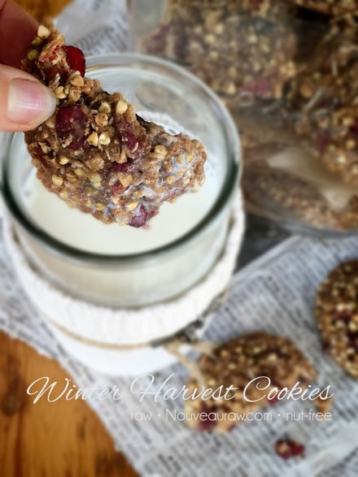

Winter Harvest Cookies | Raw | Dehydrated | Nut-Free

I am afraid that I am going to miss the fall season this year. With the way that time is flying by ever so quickly… well, I am ready to skip the whole blinking bodily function so as to assure myself that I will be able to take in the rainbow of autumn colors.
Fall isn’t just about the astounding visual effects, it also about smells, and delicious foods that correspond with the season. Typically, pumpkins are one of the first fall ingredients that come to mind, but today the deep ruby color of cranberries, the belly-warming spices of ginger, and apple pie spice mix are dancing in my head. Throw a few other nut-free, gluten-free ingredients in there, and you have yourself some Winter Harvest Cookies.
Instead of Using Nuts
- To make these cookies nut-free, I used soaked raw buckwheat and tiger nut flour.
- Buckwheat — I chose raw soaked buckwheat so I could reduce the use of calorie-dense flours. I do not recommend replacing the whole kernels with buckwheat flour, as it will make cookies denser. You can substitute buckwheat with chopped nuts if you don’t enjoy buckwheat.
- Tiger nut flour has a fluffy texture, a sweet taste, and is gluten-free, grain-free, and nut-free. If you wish to learn more about it, please click (here).
Natural Sweeteners
In these cookies, I used 3 ingredients that contribute different layers of sweetness.
- Fruit-sweetened dried cranberries — When shopping for dried cranberries (or any dried fruit) it is important to read the ingredient label. Avoid brands that contain sulfur dioxide, additional refined sugars, and oil. I use ones that have been sweetened with fruit juice, but that is totally up to you. Unsweetened cranberries are very tart and would change up the flavor of the cookie…but maybe that’s okay? You decide. Not only do they add sweetness to the cookie but also pockets of chewiness.
- Apple Pear Sauce— I already had a batch of my apple pear sauce in the fridge due to our orchard harvest, but you can always use plain applesauce. If you make your own, be sure to taste test the fruit used, because remember…the end recipe will only be as good as the ingredients you used. Not only does the sauce add sweetness, it also adds moisture to the cookie, helping to bind ingredients.
- Maple syrup — I used only 1/4 cup of maple syrup for the whole recipe. The recipe makes 14 cookies, giving each cookie less than ONE TEASPOON of sugar. Not too shabby. You can substitute the maple syrup with any other liquid sweetener. I don’t recommend replacing it with granulated sugar, because the maple syrup also adds moisture to the cookie.
As I am typing up this post, the rain is coming down hard and steady. Every once in a while I find myself staring out over the gorge, lost in thought, while my eyes find and rest on the fall colors that are just now starting to present themselves. If you don’t mind, I am going to stop here so you can go make these cookies and I can continue to lose myself in today’s beauty. blessings and love, amie sue
 Ingredients:
Ingredients:
Yields 14 cookies (1/4 cup each)
Preparation:
- Soak the buckwheat as instructed in the link above. Once done soaking, rinse, rinse, and rinse again. The water should run clear.
- Failure to do this will leave a cloudy mucilage in the buckwheat, which seems to affect the flavor.
- In a large mixing bowl, combine the buckwheat, tiger nut flour, cranberries, apple pear sauce, coconut, maple syrup, ginger, apple pie spice, and salt. Stir until everything is well mixed.
- You can sub out the tiger nut flour with any nut or oat flour. Just keep in mind that each different ingredient will change the end flavor of the cookie.
- You can also choose any liquid sweetener that you feel comfortable with.
- If you want to skip making the apple pear sauce, just use straight-up applesauce.
- Using a 1/4 cup cookie scoop, drop level scoops on the non-stick sheet that comes with the dehydrator. I did 9 per tray, leaving space in between each cookie.
- Once the tray is full, pick the tray up by the two bottom corners and lightly tap the tray on the counter. Spin the tray around, doing this on each side. This will slightly flatten the cookies, hence the reason for having space between them.
- Dehydrate at 145 degrees (F) for 1 hour, then reduce to 115 degrees (F) and continue to dry for 2 hours.
- At this point, carefully remove the cookies from the non-stick sheet and place them on the mesh sheet.
- If they are leaving bits of dough behind, keep drying until they are done enough to complete this process.
- Dry for 6 more hours or until the level of dryness is complete. I like mine moist and chewy.
- ** Why do I start the dehydrator at 145 degrees (F)? Click (here) to learn the reason behind this.
- Store in an airtight glass jar on the counter for 5-7 days, maybe longer. You can also freeze them; just be sure to keep them safe from freezer odors.
© AmieSue.com